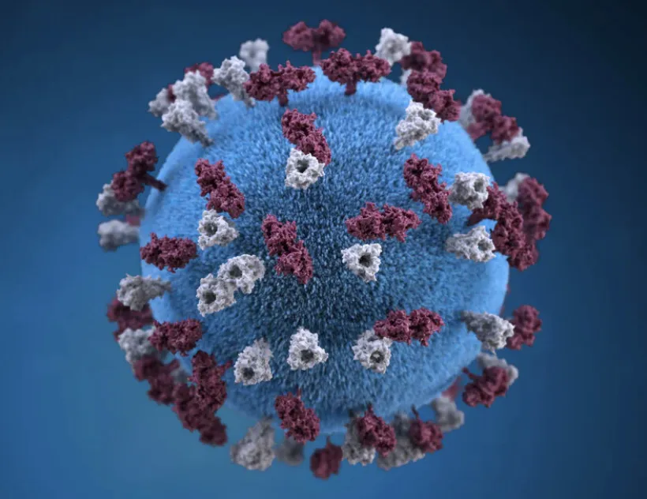
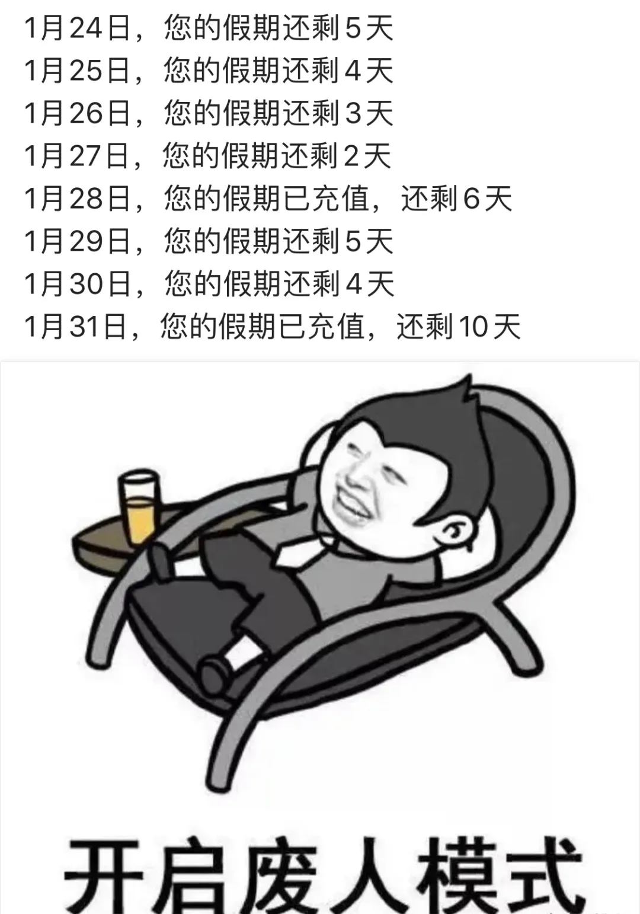
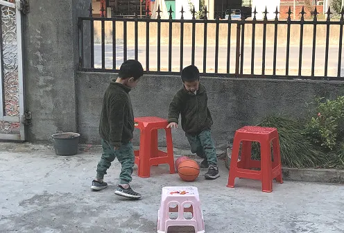
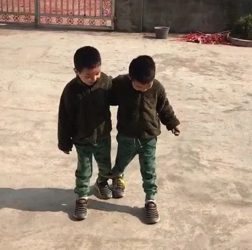
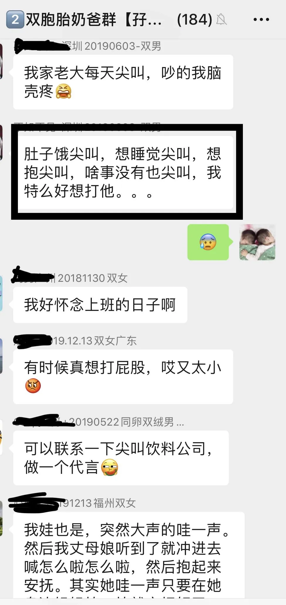

关注我们，全面了解双胞胎育儿知识
文|圆圈妈
网图|侵删
共同战疫
2020年 2 月 5 日
【01】
惊世骇俗的2020年
先来一个背景介绍：
我是个远嫁的姑娘（中年妇女）。
意思是，我的婆家和娘家的直线距离相距800公里以上！
意味着，过年往哪去，只能二选一，哦，错了，嫁鸡随鸡嫁狗随狗，是没得选，只能去婆家。
好了，重点来了：盼了5年，在2020年，我终于实现了在娘家过年的心愿。
然而，2020年的搞特殊除了跟我咸鱼翻身有关，更多的是这个寒冷的鼠年春节，全国人民是在一场惊心动魄的疫情中大门不出二门不迈，宅家度过的！
受新冠肺炎疫情的影响，举国上下都在积极响应钟院士的号召：老实待在家里就是对社会最大的贡献。
我们一家选择呆在人口密度较低的农村无疑是占尽了所有天时地利人和！
很庆幸做了这个决定：留在娘家过年，太佩服自己的先见之明了！
不必顶着风头陷入春运人潮；
不必冒着生命危险应酬从湖北返乡的三姑六婆；
不必躲在深圳闭门不出靠吃外卖度日；
不必...
此时此刻，娘家就是妥妥的现实版世外桃源，两耳不闻尘世间，一心只啃鸡鸭鹅！
农村的食材自给自足，一日三餐不用愁，因为5年没有回家过年，亲妈特别恩准我只管衣来伸手饭来张口，不用下厨干家务。
美中不足的是，吃了睡睡了吃吃了继续睡的美好假期其实只是说说而已，因为身边有两只一刻都待不住的雄性四角吞金兽！
我每天都在虔诚地祷告着疫情早日结束，开学之日请速速前来！
然而，随着疫情的蔓延之势愈加严峻，孩儿们的假期出现了戏剧性的变化，堪称前无古人后无来者。
一波三折到什么程度呢？一张图告诉你！
不知道这样的假期对于其他人意味着什么，我反正是淡淡的忧伤。
真实感言！
世界上最遥远的距离不是生与死，而是我想早点上班，可是假期却自动充值了！
你懂的，对于有学前龄儿童的家庭来说，唯一不能接受自动续费的就是假期！
【02】
双胞胎孩子们若安好，便是晴天
如何提高在家带双胞胎的技术含量，成了我的鼠年春节必修课，全程无培训，全靠运气和人品！
我一直不能理解为何狗狗喜欢溜达
现在我明白了：特么真的太郁闷了！
好在当了双胞胎妈妈这么久，我再也不吃素了，是时候自救了！
1月23日，武汉宣布封城，我们麻木的心终于提高警惕，不敢走出院子半步，圆圈对外婆家的新环境过了新鲜感后，开始各种无理由哭闹，我知道是时候开始规划他们的假期生活了。
首先确保他们的饮食作息上要规律，严格控制零食摄入量，确保他们到了饭点，都能自觉吃饭，不撒泼！
睡眠方面，有前期的睡眠习惯做基础，再加上他们的适应能力较强，基本上是小CASE，9点半准时关灯，放一段轻柔音乐或者助睡眠的小故事，不出十分钟就睡着了！
白天给他们的行程排得满满的， 看电视，学英语，读唐诗打卡（幼儿园的学习任务），玩游戏，散步（圆圈外婆家后面有一大片农场），午睡一下，基本上一天就这么过了！
此处应有掌声，家有双胞胎的优势得到了极大的发挥：有伴儿一起玩！
比如，拿个绳子拔河比赛，玩了一个上午。
比如，一个小足球，在院子里随便踢，一个下午就过去了。
比如，这种互动小游戏，二孩家庭必备
晚饭后，打开励步启蒙APP学习英语；
睡觉前，看下绘本，趁着这次契机，给他们科普一些健康知识，学习如何戴口罩，咳嗽，打喷嚏时的正确做法，并告诉他们，想要保护更多的人，首先要保护好自己！
家有小月龄的双胞胎宝宝，可能比较添堵，不能抱出门去溜达，只能整天抱着哄着，活动空间又很有限，说又说不听，训又训不得，打又打不了。
前几日看到爸爸群有一宝爸的肺腑之言，隔着屏幕都能感觉到那股满腔的怒火中烧！
本来双胞胎就难带了，还要处在如此恶劣的大环境下！终于明白雪上加霜是什么滋味了！
孕中的双胞胎准妈妈估计也没好到哪里，前几日新闻报道有孕妇感染了新冠状病毒不得不引产，这一消息一出立马引起孕育群的姑娘们一整晚的忐忑与不安！
仿佛一夜间草木皆兵，人心惶惶！
港真，真正让我开始对病毒焦虑不安的是首例儿童感染新冠状病毒被确诊。
我每天醒来第一件事就是看手机关注疫情数据，看最新动态，只要出现新增1例死亡病例就会让我闷闷不乐一个上午。
这两天圆圈有点流鼻涕，平时很佛系的我紧张兮兮了好久，专家说的新冠状病毒早期症状，我感觉都有，强烈怀疑自己是不是也中招了！
这样的魔怔持续了好几天，直到被网上一句话挽救了：全国人民都宅出了精神病！
阿弥陀佛！
还好，我不孤单！原来大家都这样--憋！
的确！
现在网上满屏信息都是关于疫情，真真假假不得而知，某些无关紧要的信息让我们都过度恐慌了！
不管外边千变万化，我们坚守钟院士的号召：岿然不动待家里，不到处走动，坚决不做2B！
与其沉浸在未知的焦虑中，不如放下手机，对谣言不听不信，只接收权威的媒体报道，老实待在家里，陪伴家人，过一个名正言顺的团圆佳节！
在当下疫情肆虐，暂未得到有效控制时，照顾好自己，保护好孩子，少生病才是硬道理！
你们若安好，便是晴天！
【03】
何以解闷，唯有妈妈群
除了照顾好自己的娃，我们都是成年人了，更加要保重啊！
特别是精神上！千万不能跨啊，这万一都垮了，谁来照顾我们的双胞胎？
朋友圈看到一个图片，让我不厚道地笑了。
乐观点讲，这场可怕的疫情是面照妖镜，照出了很多人群平日里无法用言语表达的那些痛点，比如产后宝妈的心情！
既然闷在家里容易忧郁，那就来妈妈群聊聊，舒缓下嘴皮子呗！
怀上双胞胎的孕妈，还没找到群组织的赶紧去孕育群，听听过来人过几招孕期注意事项；
已生下双胞胎的宝妈，赶紧申请去养育群恶补育儿知识；
双胞胎若是到了操心的1岁，可怕的2岁，恐怖的3岁，赶紧去教育群摸索点带娃思路。
前段时间，许多宝爸宝妈反馈申请入群失败，可以再次私信圆圈妈或【孖仔帮】群主，索要最新入群方式。
这里，再强调下群规则。
每个社群的讨论主题都不一样，建议大家根据双胞胎的年龄进入相应群组，尽量不跨足多个群组，把有限的席位让给更多有需要帮助的双胞胎家庭！
入群后，第一时间按群规修改群成员昵称，只要不发广告，这个简单的动作，将是你的免T金牌！
【04】
武汉加油，我的绵薄之力
前几天，一位武汉的双胞胎妈妈申请入教育群，她的双胞胎10个月，但是按群规1岁才能入教育群。
我琢磨着她必定跟我一样宅在家，仅剩的一点理智和母爱都被俩娃磨光了，万般无奈下希望入群得到大神们指点迷津！
感同身受呐，特殊情况，马上准予入群！
我寻思着，我一个小小V号还能为疫情做点什么呢？除了捐口罩（第一，我也买不到口罩，第二，我的善心不允许给某会肆意践踏）
巧合的是，这几天很多武汉地区的宝爸宝妈申请入群，想着不如启动一个武汉地区的双胞胎同城群吧！
武汉人民身处疫情重灾区，还被各种声音误解质疑，更加需要一个地儿抱团取暖，互相鼓励！
在群里交流下身处疫区孕妈妈该如何产检，探讨下漫漫长假如何足不出户带好双胞胎，讨论下双胞胎打疫苗的问题，咨询下哪里的奶粉尿不湿还有现货，哪里还能买到口罩….
武汉加油！中国加油！
祈祷疫情早日结束，还我们健康干净的晴天！
扫码即可加入
【重要提示】
此群仅限武汉地区的双胞胎爸爸妈妈加入
请入群后第一时间按群规修改群昵称！
-END-
今日互动话题
#宅家带双胞胎，什么滋味？#
评论区聊一聊呗！
微信公众号：孖仔帮
ID : twinsbang
专注双胞胎孕育，养育，教育经验分享
@www.sgguy.com
扫码关注我们
我知道你在看哟





